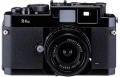

器材库 > 旁轴胶片相机 > Bessa R4M

规格总览
产品类型
可换镜头旁轴胶片相机
发布日期
2007-03-02
厂家推荐价格
98,000.00 （日元）
使用胶卷/胶片
35mm胶片
镜头卡口
VM
取景规格
取景器
实像距离计式逆向透视取景器
取景范围
85%
取景放大倍率
0.52倍
取景框
对应21、25、28、35、50mm明亮框转换视差自动修正
曝光控制
测光系统
TTL
测光模式
中央重点测光
测光范围
1EV~19EV
ISO感光度
25-3200
快门
快门类型
机械控制，纵走式，焦平面快门
快门速度
B, 1 - 1/2000秒
闪光同步速度
1/125
B门
有
过片系统
过片模式
单张, 连续
回片
按下倒片钮转动回片把柄，倒片钮提起回片把柄自动复位
卷片器
可外接插刀式卷片器
胶卷计数
顺算式，打开相机后盖自动归零
电源
电池
2枚1.5V碱性电池（LR44）或氧化银电池（SR44）
外观
颜色
黑色
尺寸
135.5×81×33.5mm
重量
440g
xfox2014-12-22 00:334.5 分
操作性 4.50功能性 4.50美观性 5.00趣味性 4.50耐用性 4.00性价比 4.50
sc2012012-04-23 00:103.92 分
操作性 3.50功能性 4.50美观性 4.00趣味性 3.50耐用性 4.50性价比 3.50
chinberlain2012-03-11 03:434.67 分
操作性 4.50功能性 4.50美观性 5.00趣味性 5.00耐用性 4.00性价比 5.00
chinberlain2011-05-25 01:20
林曳之2010-11-25 11:225 分
操作性 5.00功能性 5.00美观性 5.00趣味性 5.00耐用性 5.00性价比 5.00
jlxx2010-11-06 00:095 分
操作性 5.00功能性 5.00美观性 5.00趣味性 5.00耐用性 5.00性价比 5.00
产品图 / 样片
福伦达 Bessa R4M